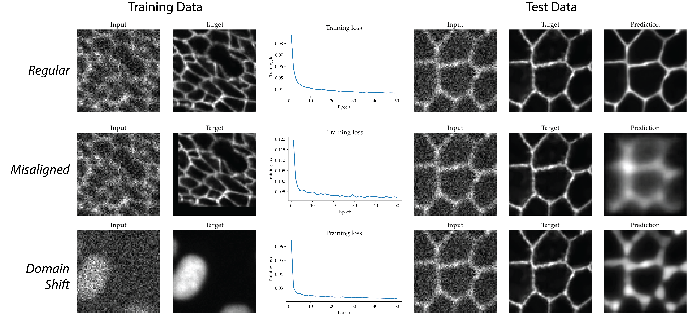

5 Collecting Training Data
Image Collection and Considerations
Martin Weigert ![]()
Imagine training a denoising model from paired fluorescence images with low and high signal-to-noise ratios. Training proceeds normally and the loss decreases, yet fine structures in the restored images look blurred. You later discover that the sample moved between acquisitions, misaligning the input and target. Each image looked plausible in isolation, but the pair was inconsistent. Or consider a segmentation model whose normalization parameters (discussed in Section 5.2.7) were estimated from the training images. Later images acquired with a different detector gain are ten times brighter and fall outside the training range, leading to poor segmentations despite looking familiar in an automatically scaled display. A decreasing training loss alone does not show whether input-target pairs are aligned or whether later images match the training conditions. Model performance depends strongly on accurate and representative training examples1,2, yet misaligned targets and mismatches between training and later images can remain hidden unless you inspect the data. These failures are examples of silent data bugs.
Understanding how microscope images are formed and acquired helps you recognize and explain such data bugs. The optics, detector, acquisition settings, and specimen preparation determine which structures are visible and how their intensities are recorded, so knowing their effects helps you distinguish biological variation from artifacts and acquisition differences. The practical goal is to become one with the data: inspect it often enough that unusual images, artifacts, and mismatched pairs become apparent. The chapter begins with planning data collection and independent splits. It then follows the data through acquisition and preparation to checks of the images and targets that reach the model.
5.1 Planning what to collect
5.1.1 Defining the task and supervision
Fluorescence images of nuclei can be used to classify cells by phenotype or to outline individual nuclei, but these tasks require different training targets. During training, predictions are compared with these targets to calculate the training error. For example, phenotype labels identify the class of each cell, whereas segmentation masks describe the extent of each nucleus. Before collecting images, you therefore need to specify both the intended output and the labels or reference measurements needed for training, as illustrated for common tasks in Table 5.1.
| Task | Intended output | Typical training data |
|---|---|---|
| Classification | Class assigned to a cell, image, or specimen | Images or image regions paired with labels |
| Segmentation | Pixel classes or individually outlined objects | Images paired with class or instance masks for full supervision, or sparse annotations such as points or scribbles for weak supervision |
| Image restoration and translation | Image with less noise, blur, or scattering, or with a predicted staining pattern | Matched images of the same specimen, such as short- and long-exposure images, low- and high-NA images, or unstained and stained images |
| Tracking | Object identities and links across time, including divisions where relevant | Image sequences with annotated object positions or masks and links between time points |
Even after choosing the task, the supervision method can change what you need to acquire. For denoising (discussed in detail in Chapter 6), a higher-signal reference must show the same structures as the noisy input, but acquiring it may introduce motion blur or bleaching. Two short, noisy exposures can instead serve as input and target, provided they capture the same underlying signal with independent noise3. When even paired acquisitions are not possible, self-supervised learning offers an alternative using individual noisy images. For example, Noise2Void predicts hidden pixels from their surroundings, using their original noisy values as training targets. This relies on spatially independent noise and predictable image structure4. Choose the supervision method before acquisition, because a missing reference channel or repeated exposure may be impossible to obtain later.
5.1.2 Choosing representative samples
Changes in staining, illumination, or detector settings can make images of the same biological structures look different and a model may fail on later acquisitions if its training data do not cover these differences. Such a systematic difference in the distribution of images, labels, or their relationship between training and later data is called domain shift. The bottom row of Figure 5.1 illustrates an extreme example: a denoising model trained on nuclei is applied to membrane images and fails to preserve their thin boundaries. Another example is classifying control and treated samples that were stained using different protocols. Such a systematic influence of staining on image appearance, called a batch effect, may let the model distinguish the groups by staining rather than by the biology5. If the staining protocol changes again in later acquisitions, the same batch effect can also cause domain shift.
To address these problems, collect independent specimens from each condition you plan to analyze, rather than relying on many images from one experiment. Sampling different regions within each specimen captures variation in structure, object density, and signal level, but cannot show how these features change between experiments. Including control and treated samples in the same experiments and acquisition batches then helps separate biological differences from technical effects6. Having relevant variation in the training data provides a form of insurance against failures on later experiments, so filling gaps in coverage should take priority over acquiring more similar images. Rotations, flips, intensity changes, or simulated noise can introduce variation through data augmentation, provided they are physically and biologically plausible for the task. Spatial transformations must be identical for paired inputs and targets. Although augmentation can increase the nominal training-set size, it creates transformed versions of existing measurements and does not add independent specimens or experiments.
5.1.3 Planning independent splits
If images from the same embryo appear in both the training and test data, a model may perform well on the test images without handling a new embryo equally well. Planning the split before acquisition helps ensure that evaluation includes specimens the model has not encountered during training. As explained in Chapter 4, training data are used to fit the model, while validation data help choose settings and decide when to stop training. Because these choices already use the validation results, a separate test set is needed for the final evaluation. For a model intended for new specimens, keep all images from each specimen in one split, including crops, neighboring frames, and augmented copies. Otherwise, related examples can cross the split and produce an overly optimistic evaluation, a form of data leakage. If the model must also handle new experiments or acquisition batches, reserve complete experiments or batches for testing. Allow for these held-out samples when planning data collection, so that enough independent specimens remain for both training and evaluation.
5.2 Collecting and preparing data
5.2.1 Understanding the image measurements
A microscope is a physical measurement device whose optical properties, detector response, and pixel size are often well characterized. Knowing these parameters helps relate pixel values to properties of the specimen, but doing so requires understanding how the optics and detector affect the measured signal. For example, a fluorescence image can become brighter because the specimen contains more fluorophores or because the exposure time or detector gain has increased. Similarly, whether two nearby structures appear distinct depends on optical resolution and spatial sampling. Understanding these relationships helps you distinguish biological differences from acquisition effects when selecting training images. Table 5.2 summarizes how common acquisition factors affect training images.
| Factor | Effect on the image |
|---|---|
| Optical resolution/Numerical Aperture | Optical blur limits detail, pixel spacing determines sampling |
| Intensity and dynamic range | Illumination and detector settings affect intensities, saturation clips bright signals |
| Noise and background | Noise introduces fluctuations, background can obscure structures |
| Exposure and laser power | Longer exposures can reduce noise but create blur, illumination can cause bleaching and phototoxicity7 |
For moving specimens, a longer exposure may reduce noise while blurring the boundaries you want the model to identify. In that case, shorter, noisier acquisitions may provide more useful training images. Acquisition settings should therefore preserve the structures or changes needed for the task, even when another setting produces a cleaner-looking image.
5.2.2 Checking images during acquisition
Use the acquisition software’s saturation indicator to check whether bright structures are clipped. Automatic contrast adjustment can make an image look well exposed even when intensity differences in those regions have been lost. If structures needed for the analysis are saturated, adjust the acquisition settings before collecting more images. Check that the pixel size is small enough to sample the detail resolved by the optics (Nyquist criterion)8. Pixel size also determines how large those structures appear to the model. For example, doubling the pixel size makes the same cell span half as many pixels across, which can reduce performance unless the model has been designed to handle this variation. Verify the pixel size in the acquisition metadata, since the objective alone does not determine it. In 3D images, the axial spacing is often larger than the lateral pixel size. This matters for augmentation because rotations that exchange the z-axis with x or y also exchange differently sampled directions. For anisotropic stacks with equal x and y spacing, 90° rotations within the xy plane preserve the sampling geometry, provided the biological orientation permits them. Differences in axial spacing between training and later acquisitions can also change how structures appear across slices, even when the lateral pixel size is unchanged. Record the spacing along each axis so that later processing can account for these differences. For example, stacks acquired with a larger axial step can be resampled along z to match the training spacing before prediction, or training augmentations can rescale the z spacing such that the model is robust to them.
5.2.3 Keeping data traceable
If cells occupy fewer pixels in one image than another, acquisition metadata helps you check whether the pixel size changed. Each image should therefore remain linked to its specimen and acquisition settings, including the channels, exposure, and pixel size9. Resampling can also change how many pixels a cell occupies, so acquisition settings alone may not explain the difference. The record therefore needs to include the source image and the methods and settings used to produce each processed image or target. This history is called data provenance. Acquisition settings can often be stored directly in the image metadata, while a versioned table or short README can document the subsequent processing. For annotations, this history includes the criteria used, who reviewed them, and which version belongs to the dataset. If a mask was annotated on a cropped or resampled image, the annotated region and coordinate transformation are also needed to relate it to the source. Keeping these links makes it possible to trace a corrected annotation to the datasets that need updating. Shared identifiers in filenames help maintain these links, but pairing files by their sorted positions can silently break them (Warning 5.1).
Include a unique identifier in filenames, such as a UUID or a timestamp combined with a sequence number, and share it between corresponding images and targets. To keep corresponding files in the same sort order, place the identifier consistently and zero-pad sequence numbers, as in 20300517T143052_0001_image.ome.tif. Separating the fields with underscores or hyphens also simplifies scripted access. Without fixed-width numbers, sorting images and masks separately can produce different orders. For example,
file1.tif file1_mask.tif
file11.tif file11_mask.tifbecomes
file1.tif file11_mask.tif
file11.tif file1_mask.tifPairing these sorted lists mismatches both targets. Match images and targets by their shared identifier, such as file1, rather than their positions in the lists, and check that every expected pair is present. This also prevents a missing file from shifting all subsequent pairs.
5.2.4 Acquiring and generating targets
For segmentation, carefully reviewed manual annotations are often the best available ground truth, a reference accepted as accurate for a particular task. However, annotating every object manually becomes time-consuming as datasets grow, particularly for 3D images and time-lapse sequences. To reduce this effort, you can start from masks proposed by traditional image processing or pretrained models and correct them, as described in Section 9.3.4.3. Both manual and assisted annotation require clear criteria for ambiguous cases, such as faint nuclei or dividing cells, so that objects are annotated and counted consistently. Having a second person independently annotate a small subset can help identify criteria that need clarification. Because errors in model-generated labels, often called pseudo-labels, can be easy to overlook, review the suggested masks using the same criteria as manual annotations.
For denoising, you can acquire a short-exposure input and a longer-exposure reference from the same field of view, or construct the reference by averaging repeated exposures. Acquiring the reference takes additional time and light exposure, which may increase bleaching, motion blur, or phototoxicity. Noise2Noise avoids the high-signal reference by using two noisy acquisitions instead3. Choose the acquisition sequence before collecting the dataset, and record the exposure settings, acquisition order, and interval between images so that the pairs can be checked afterward.
An additional imaging channel can make target generation largely automatic when it reveals structures that are difficult to annotate in the intended input. For example, nuclei that are hard to annotate in brightfield may be easier to segment in fluorescence using a nuclear marker such as H2B-GFP. If you acquire both channels together, you can automatically segment the fluorescence images and use the resulting masks as targets for the corresponding brightfield inputs. You can then review and correct these masks instead of manually annotating each nucleus in brightfield, reducing the manual work needed to generate training pairs. In histopathology, a tissue section can similarly be restained with an antibody that labels a certain structure (e.g., epithelium) and then reimaged. After the two images are registered, simple thresholding of the antibody image can then generate masks for the original tissue image6. Likewise, if the intended output is a fluorescence image rather than a segmentation mask (i.e., image translation), the acquired fluorescence image itself can serve as the target10,11. In all these cases, the additional image or channel provides targets during training, while the trained model takes only the original image as input.
5.2.5 Checking paired acquisitions
When targets come from paired acquisitions, corresponding structures need to occupy matching positions if training assumes alignment. Sequential acquisitions can provide valid pairs if the relevant structures remain unchanged between exposures, but sample motion, focus drift, and channel offsets can break spatial correspondence, while bleaching can change the recorded signal. Although pair identifiers and recorded transformations help trace which images were paired and how they were processed, they do not show whether the structures still match. You therefore need to inspect overlays to check alignment and compare intensities to identify signal changes. Misalignment can affect the prediction even when training appears to proceed normally. For example, the model trained with shifted membrane targets in Figure 5.1 produces blurred predictions despite a decreasing training loss.

Even when input and target are aligned, the target may contain details that the input does not resolve. For example, a higher-resolution reference may separate two nearby structures that appear merged in a blurred input. A model may infer their separation from patterns learned during training, but the predicted detail can be unsupported by the acquired image, an error often described as a hallucination12. Because plausible detail in the output may not match the real specimen, use a small pilot dataset to compare predictions with independent reference measurements before collecting many such pairs. Check whether the agreement is sufficient for the intended biological analysis, such as counting the two structures separately.
5.2.6 Preserving data during preprocessing and storage
Cropping an image without applying the corresponding crop to its target breaks their alignment. Spatial preprocessing therefore needs to preserve input-target correspondence, and resampling requires updating the pixel size metadata. Keep the original measurements and record processing steps with their order and parameters so that you can trace unexpected changes. Segmentation masks need particular care because their values identify classes or objects rather than intensities. For example, interpolating betwen object labels 4 and 7 can produce values such as 5 and 6, assigning pixels to unrelated object identities. Use nearest-neighbor interpolation for these masks, and compare images and targets before and after processing to check for shifted boundaries, swapped axes, clipping, or lost objects.
Storage can also change the data if compression is lossy. Saving an image as JPEG changes pixel values and introduces artifacts, while saving a segmentation mask this way can corrupt object labels and background values. JPEG is therefore suitable for thumbnails, but source measurements and targets should be stored losslessly8. Formats such as OME-Zarr can also retain axes, channels, and pixel size metadata. OME-Zarr stores arrays in chunks, allowing tools to read selected regions of large local or remote datasets without loading the entire image13. Check that the tools you use preserve both the array values and the metadata during conversion.
5.2.7 Normalizing image intensities
Images acquired with different exposures or detector settings can span different intensity ranges, so normalization rescales their values before they are passed to a model. However, a few hot pixels can set the maximum intensity of an image, so scaling between its minimum and maximum can compress the remaining intensities into a narrow range. Percentile-based normalization reduces this sensitivity and is commonly used in microscopy workflows14,15. It maps selected lower and upper percentiles, for example the 1st and 99.8th, to 0 and 1 without clipping values outside that interval. Values below 0 or above 1 therefore retain intensity differences at the extremes.
Computing percentiles separately for each image can reduce brightness differences caused by illumination or detector settings, but it can also remove differences caused by biology. For segmentation, this may be acceptable when the intended output is an object mask. You can then use that mask to measure fluorescence on the original or appropriately calibrated image. If the model itself needs to use brightness differences between images, consider a shared scaling rule. Estimate any dataset-wide parameters from the training split alone and apply them unchanged to validation, test, and later images. For multichannel data, normalize each channel independently by default, unless intensity ratios between channels carry information that the model needs to retain (e.g., for natural RGB images). Record the percentile settings and the images and channels over which parameters are computed so that training and later prediction use the same procedure.
5.3 Checking dataset quality before training
5.3.1 Inspecting images and loader outputs
An image may look correct on disk while the model receives a shifted target or swapped channels. Such mismatches can arise in the data loader, which turns stored images and targets into training tensors through operations such as cropping, normalization, augmentation, and type conversion. For example, applying a spatial augmentation only to the image breaks its alignment with the target, while converting labels to an integer type too small for the largest label id can change object identities. To detect these errors, compare the raw input, overlaid target, processed image, and loader output. Saving a few input-target pairs at the start of each run, together with their shapes, data types, and value ranges, makes this comparison easier.
A repeated time point can look plausible when viewed in isolation yet disrupt a cell track. For volumetric time-lapse data, therefore, inspect neighboring time points as well as individual volumes. Consecutive-frame differences, timestamps, or hashes can flag possible frozen frames, which you can then examine alongside neighboring time points and acquisition metadata to distinguish repeated data from a stationary specimen. If the loaded samples appear correct, fitting a small, manually verified training subset can expose problems that remain after visual inspection. Failure can point to target, loader, or configuration errors, although successful fitting (see Section 9.3.5.2) does not establish generalization. During this small run, also check whether data loading leaves the model waiting for batches. For datasets that do not fit in memory, efficient access to the chunks described in Section 5.2.6 can reduce this waiting time.
5.3.2 Running dataset-wide checks
Inspection of a few examples cannot show whether every file can be used by the training pipeline, so run scripted checks across the collection. These checks should confirm that image-target pairs are complete and that shapes, data types, and value ranges match the pipeline’s requirements. For segmentation masks, this includes the expected background value and whether labels must be contiguous. A mask exported as an RGB visualization, for example, may contain three color channels instead of object identifiers, while merging all instance labels into one foreground class removes the distinction between objects. Flag such encoding problems for review, along with nonfinite values such as NaN or infinity and suspiciously black frames. For targets that pass these file checks, summaries of object counts, sizes, track lengths, and annotation density can help locate unusual examples for closer inspection.
Even when every image-target pair is valid, a biological condition may occur in only one acquisition batch or have very few examples (i.e., an unbalanced training dataset). To identify these gaps, count independent specimens and experiments across the biological and acquisition conditions you planned to cover. For example, cross-tabulating biological conditions against preparation days and acquisition batches reveals conditions confined to a single batch. Within these groups, count rare classes and empty images separately6, since pooled counts can hide gaps in particular conditions or batches. Alongside class frequencies, record the foreground fraction per image to distinguish rare classes from images in which most pixels are background. These counts reveal gaps within the dataset, but do not show whether its images resemble those you will later analyze. In histopathology, for example, stain color can vary between laboratories and scanners16 so comparing brightness, background noise, and object sizes in pixels and physical units with the training images is important. For example, if cells of similar physical size occupy twice as many pixels in one collection, check whether the recorded pixel size accounts for the change. Differences you expect in the intended application should also be represented in the test set, including difficult examples9. If you also want to test behavior beyond that use, keep inputs such as severely corrupted images or specimens outside the intended population in a separate stress set and report its results separately.
Previews and reports help you locate examples that need closer inspection in large collections. For example, thumbnails, orthogonal slices, or downsampled movies provide overviews from which you can select regions for closer examination in an interactive viewer. To generate these overviews for data on a cluster or object store, scripts can run close to the data and return reports, projections, and flagged ids without transferring the full images. Keep each result linked to its source image, target, and metadata so that you can investigate the flag. The image dimensions, dataset size, and storage location determine which tools in Table 5.3 are suitable for this inspection.
| Tool | Typical data or workflow | Useful checks |
|---|---|---|
| Fiji/ImageJ17 | Local 2D, multichannel, z-stack, or time-lapse images | Intensities, histograms, overlays, and pair alignment |
| napari18 | N-dimensional images, labels, points, shapes, or tracks | Layer comparison and 3D or time navigation |
| QuPath19 | Histopathology and large 2D slides | Stains, tissue regions, annotations, metadata, and slide heterogeneity |
| TrackMate20 and Mastodon21 | Time-lapse tracking and lineage data | Detections, divisions, gaps, links, and lineage consistency |
| Vizarr/Viv22 | Remote multiscale OME-Zarr or Zarr images | Browser-based channel and spatial inspection |
| Neuroglancer23 and webKnossos24 | Large multiscale 3D volumes, especially electron microscopy | Volume navigation, segmentation, annotation, and proofreading |
| Python check scripts | Dataset-wide automated checks | Dimensions, ranges, pairing, duplicates, frozen frames, and stratified summaries |
Coding agents can help coordinate check scripts and viewers if the tools provide callable operations with readable outputs (see Section 3.5.7). With this access, an agent can first run inexpensive checks across the collection, then use their results to decide which previews or detailed checks to request. Combining metadata, summary statistics, and previews can help identify cases where several observations together suggest a problem that none would identify alone. To reduce the risk of overlooking such cases, design the initial checks to prioritize recall, meaning that few actual problems are missed. The agent can then investigate flagged cases with additional tools and report the reasons for each flag, together with any checks it could not complete.
5.4 Dataset checklist
- include specimen types, treatments, and imaging conditions you expect to analyze, including rare and difficult cases
- split (for training, validation, and test) by independent specimens, experiments, or batches, keeping related images together
- check targets for errors and inconsistent annotations
- check image-target pairing and alignment in loader outputs, then fit a small verified subset
- record normalization settings and estimate shared parameters from training data alone
- save images and targets losslessly, with their metadata, processing steps, split assignments, and inspection results
If a model later underperforms, these records help you investigate whether problems in the data contributed. The next chapters show what such datasets enable (Chapter 6, Chapter 7), how to select tools and train models (Chapter 8, Chapter 9), and how to judge whether the outputs are good enough for your analysis (Chapter 10).
AI Disclosure
AI language models (Claude Opus 5, Codex/GPT 5.6 Sol) were used during the preparation of this chapter. Their roles included revising prose and assisting in writing the training scripts for the training-data mismatch figure. All content was reviewed, revised, and verified by the human author, who takes full responsibility for the accuracy and scientific integrity of the final text. Selection of references was the work of the human author.